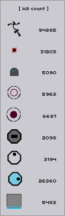

#36800 37 2004-11-18T18:24:01Z blobglob I'm still not really good enough to compete, but I managed 3-0 after four attempts.
...and I just got up to 12-0 on the first for that column.
#36952 46 2004-11-19T18:04:22Z blobglob 4-1.
Gah, died because of a really silly mistake.
#37015 50 2004-11-20T02:48:01Z blobglob I'm concentrating on the first (well, zeroth) column. I just had a quick go and got to 4-4.
#38206 76 2004-11-28T00:57:39Z blobglob I had a quick go at the 2nd column and got to
21-4.
I would have gone higher but got frustrated at dying in some of them too many times. 20-3, for example.

#38251 78 2004-11-28T04:31:20Z blobglob Up to 22-2. I don't think I'll be getting any further than that for a while: that one's a tough one for a single life, at least for me.
#39438 83 2004-12-04T19:49:46Z blobglob 5-3.
Ahhh, could've got further.
blobglob - Play it safe on 22-2 man, take baby jumps. The chasers aren't a problem.
Yeah, thanks. The problem is that when I try to play it safe, I still end up making really stupid mistakes because I'm under pressure.

#39679 14 2004-12-05T23:51:41Z blobglob 
5-0 has always been one of if not my absolute favourite level. It was the first level I really had to work to get through back when I was just starting out a couple of months ago, and for some reason I now find it really fun.
Anyway, I've been working on getting the top high score for ages. I managed to get to number 4 with about 184.500 using pootify's method (roughly) and after trying so many times that I managed to nearly double my amount of mine deaths. Heh, still couldn't make it to the top though.
Tonight I've added a good 500 more mine deaths as well as a
lot more deaths due to killing N myself. If you look at the high scores, I've added nearly 2 seconds onto pootify and Kaellstar's time using a more efficient method, and I can regularly get above 186 now. One of the bonuses of it for me is that I don't die right at the beginning as much.
I'm quite proud of that. However, you guys are probably a bit more skillful than me, so I'm sure I won't stay top with 187.400 for long. Get on it.

#39697 16 2004-12-06T00:32:20Z blobglob Heh, thanks, but I had sneaked in a couple of high scores previously.
Edit: vvv I was trying to say I'd already gotten a couple of those, not just general high scores.

#40159 104 2004-12-09T01:13:49Z blobglob I died and restarted far too many times only to manage 40-4.
#41046 48 2004-12-13T22:22:03Z blobglob N is the game I just can't help coming back to again and again, so it definitely deserves first place (heh, not that I've played the others). Best of luck.
#1618 1 2004-12-15T17:33:21Z blobglob 26-0 has been one of my highscores for a while, and I've invested a lot of time into keeping it that way. If you take a look at it you'll see that there were only 0.025 seconds between highscores, and that was the case when I took it back yesterday with 113.875. Interestingly, since then Afterthought had taken it from me with 113.900.
Anyway, this topic is basically praise to trib4lmaniac for discovering a new method. My mind was blown when I saw the highscores half an hour ago: he'd added just about a whole second to the highscore, and that is a phenomenal amount for this level. I'd thought that 114 seconds was about the best that could be done before I saw that. Nice work. I'm kicking myself for not seeing it first given how I'd landed on the central bit of ground rather than straight on the jump pad quite a few times.
Anyway, I wasn't going to post the topic until I had the highscore, and now I have. I've taken it from trib4lmaniac with 115.025 seconds, though that was only after maybe 5 or 10 minutes so I may well have improved it by the time you read this.
#41351 20 2004-12-15T17:57:53Z blobglob I often listen to music when I play N. One of the most common is a stream from DI, which Banannakid mentioned earlier.
#41353 3 2004-12-15T18:20:33Z blobglob Heh, but you've equalled it already. It seems I was quite lucky in those first 10 minutes, because I've only been able to equal it once so far.
#41355 5 2004-12-15T18:39:35Z blobglob I got my third of them a few minutes ago, too.
Edit: I'm beaten. Well done.
#41358 7 2004-12-15T19:41:42Z blobglob Well, I finally managed to improve a bit, but I didn't match your newest score. I'll keep at it...
Edit: And a couple of minutes later, I've improved again to get back to equal top.

#41360 9 2004-12-15T19:55:08Z blobglob Haha, Afterthought is unbelievable. He must be part of some sort of super-intelligent alien race about to take over the world or something.

#41362 11 2004-12-15T20:25:22Z blobglob I've improved my score, but not by much. I'm having trouble with the timing of the wall jump. The level's not as easy as it used to be.
#41376 15 2004-12-15T21:10:33Z blobglob Ahhhh.
I wonder how long it'll take...
#41391 112 2004-12-15T22:34:05Z blobglob 41-1
Just a little improvement, but this time without restarting a lot.
#41437 7 2004-12-16T02:10:57Z blobglob I had a go. I couldn't quite get to trib4lmaniac's amazing time, though.
#41439 17 2004-12-16T02:13:43Z blobglob That's absolutely brilliant.
Sheesh. I don't think there could be a more efficient method than that. Maybe I'll try later.
#41452 23 2004-12-16T03:08:30Z blobglob I'm actually a long time fan. I've been listening to the Goa/Psychedelic Trance stream since the end of 2003. Nice work advertising it, though. I was definitely glad when I first came across it.
#41634 9 2004-12-17T17:13:24Z blobglob Very nicely done Unsane (heh, I was going to comment on the short retirement). As well as tktktk's tactic, you've got that little opening jump that looks like it may have helped very slightly. I'll probably experiment.
#41636 18 2004-12-17T17:24:17Z blobglob If you think shift is too big, I use the space bar.
I just can't help it, because I love being able to pound on space when I die so I can restart the level immediately, all without having to move my hand. So lazy. I've actually tried to move to other keys a couple of times but have found it frustrating to not be able to do that.
Edit: I suppose I could ask to be able to configure the 'start level' key for a future version.
#41687 13 2004-12-18T00:57:40Z blobglob Wow, Unsane, that new time of yours is going to be difficult to beat.
#41936 18 2004-12-20T16:53:24Z blobglob Aha, I see that pootify is back on top. I knew it was only a matter of time, seeing as how the scores were getting closer and closer.
#41938 22 2004-12-20T17:24:18Z blobglob Back when I registered and voted in this I put halfway, since most of my progress had been in practice mode (which was unnecessary, looking back).
Now I've completed the 0 column, am up to 19-4, bombshelter
(29-3), 39-0, rage-ohol (48-4; I was already frustrated when I got to this one so you can guess how long it took me to close N) and 57-3.
I haven't actually made much of an effort to complete the remaining levels since I got to them, which was a while ago. I've been much more interested in the high scores and such.
#42488 21 2004-12-27T01:29:58Z blobglob Hehe, I would've felt less guilty if I'd equalled your score rather than beaten it. Oh well, I just happened to get lucky a few days ago after a series of good runs.
#43079 3 2004-12-30T04:52:22Z blobglob Hehe, nice one. I'll give it another go.
Edit: Also,
this might be of help with your username.
#43660 78 2005-01-01T01:48:06Z blobglob This is crazy. I don't know what to think.
An elaborate hoax is getting to be a plausible explanation in my mind. I can hope that's the case at least.
#44132 16 2005-01-03T10:38:09Z blobglob Heh, well done (again
). I've managed to beat your time just barely. I'm finding it very difficult to emulate the way you fell from the top to that sloped edge to immediately jump from though. I think I only managed that once in all my attempts.
On the left side, I just had some bad luck and the rocket fired sooner rather than later. 

Actually that's more to do with the technique used for falling than luck. See my demo. Not allowing the rockets to follow you into the gold areas like that was one of the essential parts of the previous method to get a highest score. It might only matter on the right hand side with your more efficient path, as you have to jump into the exit straight away after falling from the left.
#44133 182 2005-01-03T10:48:42Z blobglob I don't know about the voting issue, but thanks for the cookie Arachnid.
#44370 5 2005-01-04T15:26:30Z blobglob I've also beaten numbers 1 to 6, and have nabbed the quickest times from trib4lmaniac for quite a few of them.
I've also got quite far on the 7th. Sheesh, that one's hard.
#44376 8 2005-01-04T16:33:00Z blobglob I've got almost exactly as far as you now that you've posted that.
Yours is quicker, though.
Edit: My demo is on
NUMA.
#44380 44 2005-01-04T17:31:14Z blobglob I've pretty much completed the game now, having won episode 59. Oddly enough I haven't won on 39-2/3/4 or on 49-4 yet, but I still got secret mode.
Edit: Actually, I think I'll finish those last levels now.
Edit2: Done.
#44465 13 2005-01-05T02:04:15Z blobglob Haha, very well done for completing #7 wedgie. I see you took advantage of an exploit there.
#44505 12 2005-01-05T17:14:38Z blobglob I'd nominate 26-0 as another level which is almost in the state where it cannot be improved (perhaps another 0.025 is possible, I guess).
Anyway, I'm fairly close to the top ten, but NUMA has me distracted.
#44821 25 2005-01-07T17:22:23Z blobglob You can submit after you know tktktk. Go into highscores, episode 26, the press submit.
You must have missed
this thread, because tktktk certainly knows about the ways to submit a high score.
The same problem happened to me ages ago, but fortunately I got a better score that I was able to submit instead.
Also, I hate it when drones decide not to notice you when you want them to. Argh. I've died so many times because of that, especially on 5-0.
#44824 5 2005-01-07T17:25:41Z blobglob I clicked on 2.7 first, and the picture has really put me off attempting this series.
#46126 9 2005-01-14T15:25:49Z blobglob Holy...
Very impressive Unsane.
#46366 41 2005-01-17T01:39:21Z blobglob Back when I voted in this poll it was for mines. Here are my stats now:
Myself: 15,471
Mines: 5,414
Floor Guards: 383
Gauss Turrets: 1,087
Homing Turrets: 1,189
Chaingun Drones: 278
Laser Drones: 522
Zap Drones: 3,136
Thwumps: 1,065
That's a total of 28,545 deaths. Heh, seems that I get bad starts quite often.
#46374 43 2005-01-17T02:35:02Z blobglob Damn it. My mine deaths are going to skyrocket.
Edit: Actually, that wasn't bad at all. Probably won't last long though.
#46401 3 2005-01-17T06:04:03Z blobglob I'm still in awe of your 56-3 run.
I was thinking of nabbing Unsane's 56-4 score just yesterday. I'm glad I never bothered.
#46586 34 2005-01-17T18:55:30Z blobglob I've tried to expand in the last few days, so I should have shot up the high score rankings. Not sure how long that will last.
#46716 5 2005-01-18T17:30:40Z blobglob You know, you don't have to type the 2.
#47702 5 2005-01-24T04:45:11Z blobglob Hehe. I've had fun on this level. Still quite a bit of room for improvement.
I haven't quite managed to get that bit of gold over the second trap door trigger yet, but I know it's possible.
#47772 6 2005-01-24T18:24:36Z blobglob Yup. It's not really frowned upon or anything. trib4lmaniac's just being competitive.
#47795 6 2005-01-24T20:12:24Z blobglob Oddly enough it's still working fine for me.
#47921 4 2005-01-25T16:51:00Z blobglob Yeah, I think I have experienced this before. Far more common for me (and far more annoying in most cases) is when a homing zap drone doesn't see me when I enter its line of sight. I haven't been able to figure out whether this is a bug or a feature.
#47993 19 2005-01-26T00:16:05Z blobglob If you want you could send your free Gmail invites to
Isnoop's invite spooler as I've done before.
#48343 6 2005-01-28T17:33:56Z blobglob It carries on too. I noticed that a messed up high score crept into 0th place in 2-2 on one of my daily checks. The bad thing is that it almost looks legitimate unless you actually view the demo.
Anyway, nice work on these first few levels trib4lmaniac.
#48693 53 2005-01-30T18:05:43Z blobglob What? That's unbelievable. Last night I was desparately trying to match your .400 run, and after a couple of hours got up to .375. Sheesh, now yours is even faster. I can probably duplicate your method though.
Edit:

#48807 57 2005-01-31T05:15:38Z blobglob Thanks tktktk. Wow. Nice work guys.
Hm, when I count my own I get a total of 25. Perhaps that's because you didn't know about the dud high score currently in 0th place in 2-2?
#48853 62 2005-01-31T17:14:48Z blobglob When did you get that one? I think Unsane had it when I went through them.
Ah, right. I got it just before I edited
this post.
#49158 75 2005-02-03T16:41:41Z blobglob One of them was 17-3. Was.
It had previously been mine joint with Kaellstar and Thunder Mute.
Edit: Looks like tktktk recently got to what was the original time of the high score before trib4lmaniac forced me to improve as well.
#49306 80 2005-02-05T01:17:23Z blobglob I decided to have a go. I've got demos for the following:
It's not quite the best, but I think I've done pretty well.
#49574 8 2005-02-07T04:06:03Z blobglob I've just barely taken back the only one of mine that you had beaten.
#49581 21 2005-02-07T04:14:27Z blobglob Yeah, in practice it's luck that gets you through the chaingun bullets. There are a few exceptions though, like the beginning of
this level.
#49736 26 2005-02-08T21:24:10Z blobglob So you're saying you timed going through that first chaingun fire? 
Yeah. It's just a case of moving up to that same point, given that you start off stationary and the chaingun will therefore always fire in the same place when you move to a particular position. After a few tens of tries I was very rarely killed by the initial chaingun fire.
Things are different when you're running around, of course.
#49924 54 2005-02-10T04:05:03Z blobglob Only tktktk seems more fond of suicide than me. Even then, I have a higher percentage. I probably shouldn't be proud of it though.
Myself: 28156
Mines: 7921
Floor Guards: 579
Gauss Turrets: 1249
Homing Turrets: 1
666
Chaingun Drones: 302
Laser Drones: 665 (heh, close)
Zap Drones: 5022
Thwumps: 2357
Total: 47917
Most of these are from keeping hold of my high scores.
Edit: Sheesh, that's over 800 deaths a day since I last posted in this topic.
#49992 57 2005-02-10T22:23:33Z blobglob Yep. Your topic was the reason I highlighted it, syntax.
#50090 4 2005-02-11T20:50:39Z blobglob I'll be trying to defend 48-3, which was mine previously (and mine again).
#50101 6 2005-02-11T21:33:22Z blobglob And here I was thinking I was going to get a quiet period.
#50366 5 2005-02-14T09:12:15Z blobglob This is quite a nice map, especially for your first.
Anyway, I went ahead and beat it for you. My demo is a bit sloppy in places but I think it's pretty good on the whole.
#50369 41 2005-02-14T10:40:42Z blobglob [URL=http://en.wikipedia.org/wiki/Bonobo]Wikipedia[/URL]
I must've copied that in the process of making a post about bonobos on some forum.
#50433 5 2005-02-15T01:28:08Z blobglob Raigan posted about making a spider to automatically search through the high scores and sort out the bad ones
a while ago. I can't wait until it's implemented, as the bad high scores seem to be getting more prevalent.
#50434 79 2005-02-15T01:31:29Z blobglob Argh. That's three of mine that you've taken. I still haven't had the motivation to sit down and get them back yet, at least not properly. They're good high scores.
#50452 82 2005-02-15T04:57:44Z blobglob Yeah, I hadn't actually checked in-game. Well, I'll be playing like mad then.
Edit: Bleh, or not. I don't seem to be motivated enough. This is a bad sign...
#50594 169 2005-02-16T21:20:48Z blobglob Triple T, I played on your map and have left a comment, but the vote doesn't seem to be registering. It has confirmed that I've voted (I even went back and tried again, and it told me off for trying to vote a second time), but it's still at 5 votes required. Maybe you ought to ask Arachnid about that.
#50661 23 2005-02-17T19:10:00Z blobglob Yeah. I don't like it when the fastest route doesn't encompass all the gold, as it just feels incomplete.
Lovely runs by the way. It's entertaining to watch the ninja bounce off those walls like that.
#50735 7 2005-02-18T07:06:06Z blobglob Yeah, I mentioned something along these lines in some other thread, but it's good to give it it's own topic.
Anyway, this is a good idea. I have my jump key set to the space bar just so I can be lazy and restart as quick as possible, and it'd be nice to give users of other jump keys that luxury.
#50816 88 2005-02-18T22:34:35Z blobglob Sheesh, it didn't take long for people to snap up my high scores when I wasn't bothering to take them back.
Also, all this time I've been reading "kryX-orange" as "laryX-orange".
#51683 3 2005-02-26T07:41:21Z blobglob If the .sol file is a lot smaller than a megabyte you are also screwed, unfortunately. You didn't happen to open N twice in quick succession, did you? More than one person has reported this overwriting their data file.
Good luck, but it doesn't sound hopeful to me. This is why I like to keep backups.
#52433 19 2005-03-03T20:16:02Z blobglob Thanks for all the hard work Raigan.
#52564 23 2005-03-04T19:42:11Z blobglob Is this your tactic to try to get me to compete for high scores?
Well, it might be working.
#52567 2 2005-03-04T20:09:32Z blobglob Nah, I'm pretty sure it's the same quick three jumps off a slope manoeuvre:

I think the difference is just that your one is extremely well timed. If you look at kryx-orange's high score after yours on 36-2, you'll see he did it too, but didn't get to the wall on the fourth jump as fast as you, and so lost a little momentum.
There are a lot of high scores that could be improved with a better one of them (such as 26-0
).
#52694 4 2005-03-05T11:52:49Z blobglob Wow. I noticed that Numa was down, but not the high scores.
Panic!
#52695 8 2005-03-05T12:04:06Z blobglob Isn't the first jump from the floor to the slope, the second from the slope to the wall and third of the wall?
Yes. Sorry, that was what I was trying to convey. Here's a clearer picture.

#52890 2 2005-03-06T16:26:46Z blobglob Haha, nice one. That's probably the best of your highscores that I've seen (I haven't seen even close to all of them, though
).
#52902 26 2005-03-06T19:30:03Z blobglob Looks like I was the only one not to mind the previous icons. These new ones are better, though. Cheers Lancer.
For future reference, you can use
pngout to reduce the size of PNGs without losing any useful information (i.e. no quality loss). I managed to get NewAdmin.png down to 545 bytes. For larger images, a PNG through pngout is almost certain to be smaller than a GIF.
#53217 7 2005-03-08T16:56:58Z blobglob I agree. I hate it when my \1rp cycles are broken by the e key, forcing me to go and find the map data again. I've been wanting to mention this for a while, but never bothered to make a thread.
#53219 11 2005-03-08T17:05:50Z blobglob blobglob has gone completely insane recently. Hes beaten practically all my highscores - and I don't have the time to reply to many of them 
...
Anyway, I was playing on a few of my favourite levels last night, including this one. I was astonished when I saw that I'd managed to beat my old high score by a long way (it was 51.900). The first half actually feels slightly lazier than the previous one. It's the second half where I've somehow made up all that time.
#53220 4 2005-03-08T17:16:08Z blobglob Assassin of Sabotage: I think you've got the wrong level.
5-0 was the first level that I ever found hard, way back when. It turned into a favourite of mine. Anyway, the trick with returning up the right hand side is to use momentum from previous jumps to get past that mine on the wall. You need to do it when drones aren't blocking the way, of course.
#53223 13 2005-03-08T17:22:35Z blobglob No, I haven't taken any back. I did take one from you that I'd never tried for before, though (just the one). I'm sure you'll get it back as soon as you find it.
#54575 10 2005-03-17T22:03:37Z blobglob Heh. Those are two of my best high scores.
I really doubt you'll get past my 2-2 time, but if you managed it I don't think I'd bother trying to retain it (I think my spacebar would break if I played on that one any longer...). On the other hand, 2-4 is just about the only in-game level I still play on for fun. It should continue to rise if I'm lucky.
#54823 11 2005-03-19T18:05:22Z blobglob ^
It has "missing or currupt" map data. Numa won't accept it. Huff. (Goes off to sulk.)
Anyway, this is definitely the best bug map I've ever seen. Nicely done!
#54939 3 2005-03-20T03:48:15Z blobglob I developed the current route, and I can safely say it won't make any difference. The reason is because of the bottleneck at the top with the zap drone.
Sure, it's possible to get to the top a little bit faster (not by much though, given that you have to time the bottom part well). However, it certainly wouldn't allow you to complete the level any faster, because you definitely couldn't get to the right hand side before the drone. If anything it would be slower, as you'd lose the momentum you would have had when going into the bottleneck part.
This post probably won't make much sense unless you've played on the level, or perhaps if you've seen either Brett_Sully's or my high score.
#55183 7 2005-03-21T17:31:28Z blobglob I'm afraid I can confirm what LouDog004 was saying. Each of the candidates is noticably laggy compared to 1.3c, which used more system resources but is much smoother. I'm on an A64 3000+ with a GB of RAM, by the way.
#55901 11 2005-03-25T11:30:26Z blobglob Good to see that some of them have been dealt with. But yeah, I can still see a few dotted around (2-2 and 25-2, for example).
#58947 22 2005-04-08T00:35:14Z blobglob Mine hasn't increased that much since January or February, when I stopped going crazy for high scores. I'd imagine trib4lmaniac has overtaken tktktk for the highest, as he's been playing for high scores for the longest (probably).
Also, it's pointless trying to work out some "skill value" or something based on time played and kill count, because different players have different goals, not to mention the fact that kills in debug mode don't count, hence avid NUMA players will end up with less kills than people after in-game high scores.
Anyway, onto what the topic was for:
Myself: 33505
Mines: 9434
Floorguards: 779
Gauss turrets: 1516
Homing launchers: 2215
Chaingun drones: 361
Lazer drones: 983
Zap drones: 5903
Thwumps: 2627
Total: 57323
#58953 193 2005-04-08T00:49:04Z blobglob The cumulative high score and total kill count ideas are both good ones.
Oh yeah, I've actually stopped being so lazy and started playing on 1.4a now. Neither of the release candidates seems any faster or slower than the other in-game, but I haven't been keeping track of the ms/f.
#59064 4 2005-04-08T20:55:03Z blobglob Ah, Zenith! Yes, I'm a fan of this map too. I haven't had a decent go for a high score yet, though.
Edit: I've improved it slightly.
#59118 7 2005-04-09T01:12:41Z blobglob I don't think many of the 0th places for the new levels are going to last for long. A few have fast routes sorted out, but I don't think many are particularly optimised.
#59209 30 2005-04-09T06:02:20Z blobglob Heh. You must have missed tktktk's kill count, and as I said, I imagine trib4lmaniac's will be even higher. As for mine, back in the old days (January and February actually), me, Sammage and trib4lmaniac were in competition for high scores, and going for high scores really gets your kill count up. Unfortunately, I sort of ran out of steam after that. I haven't even got 10,000 deaths
since then. That's partly explained by being more involved at NUMA, though.
The number of times I press 'k' is really high, as you can see. I tend to make stupid mistakes and restart the level rather than bothering to finish a slower run.

#59227 32 2005-04-09T11:06:31Z blobglob I'm glad I'm not the only one. I use the space bar as my jump key, and I press it on the right hand side so my fingers are nice and close to the kill button.
#59426 35 2005-04-10T14:43:13Z blobglob LouDog's right, you know. Well, maybe not that the topic would have been deleted, but that Daddaluma is having us on. Here's proof:
Try quoting either of Daddaluma's posts with the "edited by" message. You'll notice that there is code in the quote corresponding to that message. Now let's go back in time to when Kablizzy was censoring people for writing what the secret mode was by editing their posts, such as
here. Try quoting that one. This time, there is no BB code for the "edited by" message.
Other clues include the fact that it is extremely unlikely that Keron Cyst would have caught the message in the <= one minute before Gohan saw the post and replied, and the format of the edited by message is slightly different to the proper one (compare Daddaluma's first post with Gohan's directly underneath, and you'll see that they're different).
In other words, some of you have been fooled.
This post has been chewed on by
Keron Cyst on Apr 1 1973, 00:00 AM
#59429 215 2005-04-10T15:10:23Z blobglob Try pressing \ instead. I have a UK keyboard, and ~ has never worked for me either. It's a common problem for people who don't have a keyboard with a US layout.
Edit: I should probably mention that you should discuss general problems with the game
over here.
#59474 3 2005-04-10T20:33:36Z blobglob This sounds great. Thanks for all the hard work Mare and Raigan!
#59787 41 2005-04-12T19:46:33Z blobglob 24-4? Back when I was new to the game, I played for a couple of hours on that one before I completed it. I probably spent about as long on it as I did on 88-4.
#2520 1 2005-04-12T21:40:39Z blobglob I completed the game yesterday, and in the course of that got the top score on 88-4, and by 9 seconds no less. It was the only time I had managed to complete it in the two hours of constantly getting closer, and I was quite pleased with myself.
Then I came back today and saw Knu, who had been the person 9 seconds behind, had added an extra 4 seconds on. Of course, this prompted me to start going for the high score again.
Anyway, long story short, I added another couple of seconds and got back to the top on my fourth additional completion. You guys should try it too: seriously, it's a fun level once you've got used to it. Soothing music is recommended, though.
#59812 229 2005-04-12T22:29:17Z blobglob Quote: Igi
C:\Documents and Settings\...\n_v13d_userdata.sol
Are you sure you meant n_v13d_userdata.sol rather than n_v13
b_userdata.sol?
#59846 5 2005-04-13T03:37:13Z blobglob I like your Idle Australians avatar, actually.
#59979 2 2005-04-14T04:23:48Z blobglob I seem to remember a
similar discussion.
Anyway, I tend to head right and am right handed. I have no idea why. :)
#60334 5 2005-04-17T04:27:11Z blobglob Both of these are great suggestions that would save people a lot of time.
#60350 14 2005-04-17T07:54:32Z blobglob Most of the good authors have been covered, I think. I couple more that haven't been mentioned already are LouDog004 and jeffkillian.
Not that many maps appeal to me, actually, so there aren't really any authors in particular who always produce something I like. Still, there's been at least one map from just about everyone mentioned here that I've really enjoyed playing on.
#60595 151 2005-04-18T21:24:00Z blobglob Oh well, it was nice while it lasted.
#60600 41 2005-04-18T21:34:03Z blobglob I though I already posted in this thread ages ago...
Anyway, I voted yes, even if I have to redo the level. I don't really get people's love for Mount Doom, to be honest. I like LouDog's idea of swapping all of episode 88 with 89.
#60602 10 2005-04-18T21:35:09Z blobglob None of them.
(Not because it's someone else, but because I don't have a favourite map maker.)
#60627 154 2005-04-19T00:12:31Z blobglob Sheesh, these are pretty hard.
61-3, 71-2, 80-3.
#60865 23 2005-04-20T05:11:36Z blobglob Funnily enough, Simply is one of my favourite maps by maximo. I found it very, very fun. I remember playing on it for ages back when it was submitted, but I never got faster than tktktk and I didn't comment. I either voted a 4 or 5, I can't remember.
I do think that a lot of his other maps are overrated, though.
#60868 15 2005-04-20T05:53:26Z blobglob I've added 6 seconds. 143.800 is the time to beat.
Good luck Knu. I reckon it could be pushed to 150 if it was an incredible run.
#60878 28 2005-04-20T09:45:16Z blobglob I laughed out loud when I saw ads selling marquees in the News Box thread.
#61327 6 2005-04-22T10:35:43Z blobglob I use the space bar as my jump key, and there are levels that annoy me (one I can think of in-game is 82-0). Making the continue key configurable would be good regardless of this problem, but one of the reasons I use the space bar is so I can restart a level as quickly as possible and configuring the "start level" key to something else would remove this perk.
There is a little trick that I use in absence of anything else: if you tap the space bar as lightly as possible to start, you don't jump. However, this is not ideal at all because half the time you don't tap it lightly enough and have to kill yourself and restart (if you're going for a high score, that is).
In other words, I am in very strong agreement with HeartView.
#61335 16 2005-04-22T12:17:16Z blobglob Hm. I've found out what the problem is with nevermore's image attachments. Using notepad to look for the metadata, I've found that they are all in PDF format, and a simple rename to .pdf was all that was needed to open them. How exactly were you saving them, nevermore?
Anyway, I've converted them all to PNG, because it's much less of a pain to view them than PDF files.
Number 1.
Number 2.
Number 3.
They're all unnecessarily big because nevermore saved the whole screen and I couldn't be bothered to edit it down to the tiny relevant bit.
#61356 19 2005-04-22T14:25:56Z blobglob Ok, from now on make em pngs? Cool, I'll do that.
No, I doubt that will work. I just happened to convert it to PNG; I could have chosen anything. The problem is that it's being saved to PDF despite the file extension. Really, how are you saving them? With what program?
Grr!
*searches for png plugin with little success*
What browser are you using that doesn't support PNG?

#61362 22 2005-04-22T14:55:04Z blobglob Internet Explorer for the Mac is obsolete (IE5!) and no longer developed or supported by Microsoft. I strongly recommend you get a better, up-to-date browser, such as
Safari or
Firefox or
Camino. Seriously, it's unbelievable that someone can't view PNGs nowadays.
#61378 26 2005-04-22T15:30:18Z blobglob I take a screenshot, and they automatically appear as pdfs... I change the file extension because last time I tried to upload it as a pdf it didn't accept it.
Well, that's the problem then. Changing the file extension doesn't convert a file from one format to another. All you're doing is changing the name. You'll need to find some way of converting the PDFs into JPEGs, like with an image editor of some sort.
Well, I do have both Safari and Firefox, but I prefer IE. I've been using it for a long time, and I've gotten much more used to the interface. Firefox just seems so much less... polished.
Normally I'd try to explain the advantages of alternate browsers to IE, but I think I'd be wasting time if you would trade functionality for perceived "polish".
#61386 29 2005-04-22T15:54:08Z blobglob What program are you using to save the pdfs?
I think Macs automatically save to PDF when you take a screenshot.
Anyway, I found
this thread with a quick search with Google. There are a few suggestions in there. Apparently Apple's Preview does conversion from PDF, and I'm guessing that comes with OS X.
#61477 2 2005-04-23T02:55:10Z blobglob Don't worry, it's not just you. The whole Metanet site/high scores/everything relating to the Metanet server is down.
...
What am I saying? Argh! Panic!
#61482 5 2005-04-23T03:14:00Z blobglob The metanet site and highscores have been down all day, but NUMA is working perfectly fine. I'm pretty sure they run on different servers.
They do, but logging in at NUMA is tied in with your in-game username, so I suspect it has to query the Metanet server.
#61693 13 2005-04-23T23:32:45Z blobglob I can't log in to N-vision. I'm already cookied at NUMA, fortunately.
Nah, everything has been and still is working fine for me. Including n-vision.
That's probably because you're already logged in, right? It'd still be working then due to cookies. You could try logging out then back in, but I wouldn't risk it because I'm fairly sure you'd have the same problem.
#61694 7 2005-04-23T23:34:13Z blobglob Quote: pariah
yes/no?
Yes, actually.
Come on people, let's get into the habit of linking to the other topics instead of saying they exist.
#61697 52 2005-04-24T00:08:24Z blobglob Sorry nevermore, I'm going to continue the off-topic discussion.

Zero virii. Check your spelling.
Actually, the correct plural of
virus is
viruses. For an extensive discussion on the reasons why this is the case, see the
Wikipedia article. It's only if the word ends in
-ius that the plural is
-ii. For example, the plural of
radius is
radii. That's probably where the misunderstanding stemmed from.
and to set the record straight:
if you do indeed want to use latin, it's spelt "viri"...
Viri means
men in Latin.
#61698 16 2005-04-24T00:15:56Z blobglob Scam. Even in the unlikely case that they paid you, they would sell all your personal information to third parties and you could expect junk mail/email.
I'm only sharing the info with you all becuase I thought you might be interested, if you don't like it, then don't even bother replying glenno!
I'd hazard a guess that the real reason you decided to inform us about this was that you earn money for people you refer to it, like traditional pyramid schemes. Actually, I'm not really guessing. You have a referrer ID in the URL you gave us.
http://www.ppcappraisal.com/register.php?fT=1&RefId=19687
Also, it comes with adware:
You might get some popup windows opening just as you would normally when you surf the internet, just close these from time to time.
Don't bother guys.
#61700 18 2005-04-24T00:21:41Z blobglob Nah, I read it and found it very amusing.
Better that more people persuade others not to do it, though.
#61828 3 2005-04-24T16:42:04Z blobglob First, make sure you have hidden files and folders turned on. It is stored in a .sol file, so either do a search for *.sol or, assuming you have Windows XP, browse to:
Quote
C:\Documents and Settings\[Username]\Application Data\Macromedia\Flash Player\#SharedObjects\[Bunch of random characters]\localhost\n_v13b_userdata.sol
Fake edit: Damn it, beaten.
#61830 16 2005-04-24T16:45:46Z blobglob Yeah, it's expected that you can't log in to NUMA or the game.
You shouldn't be having a problem with the forum, though.
#62025 163 2005-04-25T15:57:33Z blobglob 80-4. That's a tough one.
I also wasted my time getting up to 4-1.
#73967 22 2005-06-11T15:14:29Z blobglob I found it thanks to
HOTU, if I recall correctly.
#73972 22 2005-06-11T15:24:23Z blobglob I use my index, middle and ring fingers to press the space bar. I press the right hand side so I can quickly jump up to "k" when I need to (mostly just to speed up the ninja's death).
#75738 13 2005-06-17T16:56:40Z blobglob And it's gotta be obtained by innovation. Otherwise, where's the fun?
Please keep getting high scores Afterthought. I've loved them since 26-0.
As for the topic, it's always been 0th only for me. It's tough not having the drive. Then again, I only rarely come up with the method anyway. Only one comes to mind, although I liked it a lot. Hm, I'd better submit a score before I drown in nostalgia.
#75745 10 2005-06-17T17:12:10Z blobglob I've pulled an all-nighter, and gone another entire day, like, almost. so, like, 36 hours, I guess.
This has happened to me on at least four or five occasions. Nothing more though.
#76095 13 2005-06-18T15:10:16Z blobglob I run it maximised without fail. Same with almost everything else, actually. I like full immersion.
#79874 34 2005-06-30T07:21:44Z blobglob Missed this topic the first time around.
Personally, I just forget about the episodes being in the game. I find it much, much more fun to go for individual levels for the sort of reasons that Sammage has said, and as such the only episode high scores of mine will be ones I got by accident. As far as I'm concerned, episodes are there for game completion and have nothing to do with high scores.
The only time I'd be happy with an episode score would be if I'd got the equivalent of 0th on every one of the five levels. Since it's easier to do each one individually, why bother? Maybe I'll work on it once I've got 0th on every single level. :P
#81209 25 2005-07-05T08:54:53Z blobglob hey Starcrossed I'm from England too, so is iangb and trib4lmaniac, sorry for any other Brits I've forgot.
I'm another, and there were a couple more in
this thread.
#81642 83 2005-07-07T08:26:35Z blobglob This is never a bad thread to bump.
Anyway, I forgot to check this thread when it was on its third page and never saw that people liked my 79-4. I remember seeing that Afterthought beat it with a very classy high score, though.
trib4lmaniac beat my 88-4 fairly recently as well. I'm think I'm going to try to get that back in the near future.
I hadn't posted in this thread before because it's really difficult for me to pin down favourites, although not so much for my own high scores. As other people have said, I like Sammage's run on Bricklayer (83-3), not because I enjoy watching it, but because he's bothered to get such a good run on that level and how far ahead it is.
#82392 17 2005-07-09T18:30:44Z blobglob Rating threads like this one are a terrible thing to post.
#82697 2 2005-07-11T12:40:02Z blobglob This topic is the one you're looking for.
Oddly enough, all I remember of you was this post from my lurking days (not that I ever stopped lurking):
Quote: Khane @ October 28th '04
yes im reading your thread as we type. Who the hell made kablizzy a mod? not a bad thing but.....REALLY? who?
Heh.
#82918 9 2005-07-12T10:55:13Z blobglob I'm not a fan of the current N comic trend, so no.
Edit: Of course, if you think you'd enjoy doing it, go ahead. I just wouldn't read it.
#82919 6 2005-07-12T11:57:56Z blobglob I completed Prison Break for you.
Oh yeah, I'd attempted to complete it for about an hour and a half yesterday with no luck, but won in the first 10 minutes of playing today. I suspect it'd be easier for me to do it again now that I've done it once, as that's generally how it goes.
I'm undecided which is harder out of Prison Break and Mother Thwumping Impossible. They took me about the same amount of time, at any rate.
#82920 4 2005-07-12T12:01:19Z blobglob Well, I can understand German as long as it's simple enough. I don't know if that counts.
#82959 9 2005-07-12T17:18:40Z blobglob Yeah, sorry about the super-long commentary. I got a bit carried away.
#83067 5 2005-07-13T00:39:47Z blobglob Look at the high scores before posting, Razorstar.
#83070 8 2005-07-13T00:53:14Z blobglob It varies quite a lot. Probably around 7 hours a week at the moment (an hour a day sounds about right), but that's a far cry from what it was in the past. It could've been 40 hours a week at one point.
#83089 6 2005-07-13T02:15:55Z blobglob It's been eleven months since I found N.
#83225 3 2005-07-13T15:31:43Z blobglob I haven't got the hang of that double bounce block jump. Looks like I'll have to if I want to compete in some levels.
#83324 26 2005-07-13T23:56:02Z blobglob I'd say it's definitely impossible to beat the drone, even if you let it go to the top and try to take advantage of the space at the top or the small bit of the exit showing.
I managed to get a frame quicker than tktktk, Seifer and spect, but there's a bit more more room for improvement considering there's a noticeable pause in my demo.
#83331 28 2005-07-14T01:32:56Z blobglob I completed it two frames faster, to bring it up to 122.
#83337 32 2005-07-14T02:18:26Z blobglob Haha, very impressive. I was originally going to say something like "even Afterthought couldn't do this", so it could've been worse.
#83588 38 2005-07-15T04:53:05Z blobglob They're not particularly difficult to get. Sometimes it only takes a few minutes.
The difficulty comes in holding them, or finding speedier routes.
#84282 236 2005-07-17T20:27:37Z blobglob I'm quite surprised that I'm still there. I've actually got a few 0ths that I haven't submitted, all on the 1.4 side, I think. They should appear eventually if I get round to improving them.
#84286 2 2005-07-17T20:35:10Z blobglob 11-2 was the first level I thought of when I saw the topic. I've spent quite a bit of time playing on that one for fun.
Precision falling is one of the tricks I'm better at. I don't find it very frustrating, at least.
#84324 6 2005-07-18T01:26:08Z blobglob Whatever is comfortable. Actually, more like whatever is available. I've inherited my dad's reluctance to go to shops that sell clothes. It's been several years, at least. Anyway, I've only got plain t-shirts and trousers in a variety of greens, blues and greys. I don't care about fashion at all, so it sounds like I hold a similar position to Maniac.
My school had uniforms. White shirt, dark grey trousers, school blazer and tie. In the 6th form we were able to wear a proper suit and were allowed leeway on the shirt, though.
#84594 6 2005-07-19T07:52:00Z blobglob Boss mode significantly reduces CPU usage for me, although it remains high enough that I can see it might be a problem for slower machines.
Mebbe boss mode should minimize N, I mean, that idea is to get it out of the way right?
I'd hate this, as my only use for boss mode is to cancel out any errant rocket/laser drone sounds.
#84777 4 2005-07-20T02:21:06Z blobglob Never tried, as I never had the need to.
#84791 8 2005-07-20T04:08:11Z blobglob See also: n_cheats.txt
#85020 11 2005-07-21T05:18:47Z blobglob Myself: 40734
Mines: 13792
Floorguards: 1657
Gauss turrets: 2400
Homing launchers: 2931
Chaingun drones: 550
Lazer drones: 1370
Zap drones: 9598
Thwumps: 3186
Total: 76218
Not that much of an increase from
before.
Man, Seifer has more suicides than me. I hadn't realised how long I'd been pretty much leaving the high scores alone. =/
#85031 13 2005-07-21T06:41:31Z blobglob Left side of the high scores section.
#85205 6 2005-07-22T05:16:46Z blobglob And really, what on earth are you complaining about? People copying high score runs? What are they supposed to do? just let the 0th place stay in 0 because it's bad form to copy him?
If anything people copying your route is flattery.
I think you need to reread his posts, especially the edit of his second one. He's not complaining about people improving his route and taking 0th place from him.
i agree that it's sort of a problem -- the first month or so of a new release is great because people keep coming up with new runs.
Yeah. This is one of the reasons why I'm not into the game as much as I once was (the other being that I feel like I've played it all before). I suppose both of these are unavoidable in the end. :)
#85678 61 2005-07-23T22:23:55Z blobglob Haha, I love people messing around like that. I recall seeing people doing that sort of thing at the start of Cubish (37-3).
To be honest, submitting that high score was a mistake. I'd actually copied your method back on the day you posted, but thought it would be a bit obnoxious to grab it like that. I then proceeded to forget about it. However, recently I've been submitting high scores whenever they've been getting on the scoreboard rather than just at 0th, and had just finished a fairly good 31-3. Of course, when I submitted it, the rest of the levels in the episode were also submitted...
I'm glad I did it though, because now we have your crazy beginning.
#85681 9 2005-07-23T22:31:38Z blobglob Those people asking about
Hyper: it's a gaming magazine in Australia.
ah, i think that's it. did he ever post the article? it was the June issue or something...
No, it was further back. It was posted in the
forums as well as on the front page of NUMA (on which there is still a working link to the scan of the article).
#85736 31 2005-07-24T04:29:50Z blobglob You might want to invest in a new Caps Lock key, Sgt. Poptarts.
brickman's right. I only completed 1.3c at the start of this year (January 4th), and had been going for high scores for a while before that. I must have got a fairly large number of deaths before I beat the game. I'd guess around 20000, since two weeks after that I had a total of 28545.
#85763 63 2005-07-24T09:36:36Z blobglob Aha, I think I've come across another candidate for a closed level. I can't see how it would be possible to do 2-3 any faster, as there's a bottleneck caused by that drone.
#85928 66 2005-07-25T03:25:44Z blobglob I don't think it would lead to a faster time, as even if you managed to pull it off there's no quicker way to get back up to the exit than the current one using the leftmost launchpad.
#86103 75 2005-07-25T22:53:42Z blobglob Yeah, it actually is impossible; to do a corner kick you'd be jumping off the side of the one way and would have no additional momentum to help propel you. There's no way a simple wall jump and corner kick could get you all the way to the door, which is both raised and on the other side of the level.
I've just had a mess around in debug mode using the attached file, and I actually managed to get a kind of corner kick off the wall jump, which I'm quite surprised at given the angles involved. However, I travelled less than half the required distance. Even with removing the barrier and running from left wall into a corner kick from the door, I've only managed to just about clip the left hand corner of the exit platform. Given that you can't possibly get that momentum from a wall jump, I think we can safely say it's a futile effort.
Attachment (lost): post-15-1122332022.txt
#86108 77 2005-07-25T23:04:22Z blobglob But it's harder with a one way wall.
Yeah, that's exactly the reason why I replaced it with a normal one.
It shouldn't affect the maximum momentum you can get off any wall jump.
#86126 8 2005-07-26T02:36:09Z blobglob Yes, it does. It's in your profile right under the post count.
#87203 5 2005-07-31T00:49:17Z blobglob Good to see you on the forums glupi_zmaj. Those of us who keep tabs on the high score situation certainly know who you are. :)
#87584 4 2005-08-01T21:59:34Z blobglob Why would posting in the forums be any evidence of innocence?
Anyway, in addition to the ones already mentioned I've noticed
Kid9000000 and
kid9000000_REBORN on lots of levels. I can find them on 3-2, 4-1 and several of the levels in episodes 5 and 6 with a quick look, and they continue to appear as you go along. Also,
linkiswickeddank and
linkissoooowickeddank are both on 2-4. Wow, I just found both of them
and linkissoowickeddank on the high score for episode 31.
It's possible that these could have been mistakenly submitted, although I'd like to hear from them as they're not simple typos. In any case, they ought to be deleted or merged if they were created by the same person.
#87607 7 2005-08-01T23:16:05Z blobglob Still one or two hours a day.
#87608 6 2005-08-01T23:17:58Z blobglob He also
posted as a guest. That's why I'd like to hear from him.
#87814 11 2005-08-03T04:16:37Z blobglob This isn't near as big an issue as people are making it out to be.
Of course it isn't a big issue, and I think complaining about things like
this would be laughable. Still, it has the potential to be abused, and I can't see any reason why the people mentioned, if they are indeed the same people, made multiple accounts and submitted high scores to the same levels. As such, I think it should be frowned upon.

Do you really think there's no difference between your baseless rumours and the ones above?
#88794 2 2005-08-06T19:21:18Z blobglob Haha, I was wondering when I was going to lose that high score. I had it since about January with no contenders at all.
Edit: Spent five minutes getting a frame faster with the old method.
#88797 2 2005-08-06T19:32:49Z blobglob I don't bother with userlevels.txt personally, so it's still the 412 KB it was when I downloaded 1.4v2. I play in good old debug mode.
#89156 6 2005-08-08T01:50:17Z blobglob not only is there a highscore forum, there's a highscore system built into the game -- just click on a highscore to watch that player's game.
Not for the user levels, though.
There was some
competition for both of metanet's user levels before. trib4lmaniac managed 78.325 for brain n-bolism.
#89267 8 2005-08-08T18:11:04Z blobglob Nicely done.
I'll probably have a go sooner or later.
#90069 13 2005-08-12T00:08:39Z blobglob float away from the corner quite floatily
Yeah, that's what I thought of when I saw the topic.
#90071 3 2005-08-12T00:19:24Z blobglob I played on the map back when it was submitted to
NUMA, but it seems I didn't comment on it back then. I recall making a demo, but I think I found that you had beaten what would have been my time when I came to post it. :)
Anyway, unfortunately I can't respond to your demo (or spect's demo) at the moment due to my computer crapping out. I'm using my old one at the moment, and N is unplayable.
#91550 25 2005-08-16T04:39:28Z blobglob I am 179 cm/5'11" and 54 kg/119 lbs at 18 years of age. I'm very skinny. Underweight, in fact.
Hey guys, you can use Google for any conversions. For example, 6'8" (man that's tall) is
2.03 m.
#91777 7 2005-08-17T00:21:14Z blobglob I have Windows XP on my hard drive as well as the Ubuntu Linux Live CD, so my answer is yes.
#91942 92 2005-08-17T14:02:53Z blobglob Those are both nice little techniques, clux. :)
#92091 6 2005-08-18T05:31:13Z blobglob Yep. Watch how people in the high scores do the central bit. That's the easiest way.
This level took me a couple of hours to beat back when I was new to the game last year.
#92429 3 2005-08-19T10:24:23Z blobglob That is very nicely done.
#92431 13 2005-08-19T10:46:00Z blobglob I haven't been playing in the last week or so because I'm currently on an older computer, and N gets >100 ms/f which is far too frustrating to play on. Here are my deaths anyway:
Myself: 44269
Mines: 15177
Floorguards: 1854
Gauss turrets: 2569
Homing launchers: 2998
Chaingun drones: 585
Lazer drones: 1408
Zap drones: 10345
Thwumps: 3406
Total: 82611
It takes me hundreds of tries, and i always wonder wether he does the same, or beats mine with ease.
Heh, this is definitely not the case. It's just persistence. The reason it took so long for me to beat yours again was because I was so frustrated with continually dying on that level.
15-4
That was one of my classic high scores. I won't rest until I've got it back! (well, once I get the power supply for my fast computer fixed...)
#94192 15 2005-08-26T04:28:35Z blobglob Well, my speed is 11mb/s. Happy with it.
120kb/s is good. Still sluggish these days though.
strange, luck you, i have 6mb w00t
I supposedly have 1.5 mb/s but I usually average about 130 kb/s from the net.
You're all confusing megabytes (MB) with megabits (Mb). For example, 1.5Mbit/s equals a download speed of 192KB/s under ideal conditions (i.e. it'll be a bit below that). 11Mbits translates to 1.375MB/s, and 6Mbits to 0.75MB/s.
Of course, you
can download at 11 megabytes per second and up in some parts of Asia and Scandinavia, where 100Mbit/s and even 1Gbit/s connections are available in built up areas.
As for the topic, my household's connection was upgraded to 2.2Mbit/s a month or two ago, which is four times what it was previously. That was rather nice.
#94574 54 2005-08-27T07:12:36Z blobglob Quote: Afterthought
trib4lmani4c and I are actually the same person.
Pfft, trib4lmaniac would never spell his own name wrong. :P
#96449 95 2005-09-02T12:08:16Z blobglob I was going to say that 82-3 had more room for improvement, but I see you've already taken advantage of it. The reason I'd done well on 82-3 was that it had been one of my favourite levels on NUMA for a while before it was incorperated into the game.
It's tough not being able to reply to these. Still waiting for replacement power supply...
#96453 4 2005-09-02T12:18:22Z blobglob It should be mentioned that walljumping gets increasingly difficult the less processor power you have.
#96455 97 2005-09-02T12:25:04Z blobglob Yeah, certainly. Expect to have to fight me for it.
#103706 280 2005-09-26T00:19:46Z blobglob I'm grabbing the odd level here and there.
Eventually I'll sum up the resilience to go for 15-4 again.
#106223 290 2005-10-07T17:37:23Z blobglob Thanks again for the update, spect.
I've been fairly active in looking around and nabbing high scores on levels that I enjoyed playing on (or that I was high up on to start off with). I got quite a few ties if I recall correctly.
#106653 295 2005-10-09T12:44:19Z blobglob I forgot to mention in my previous post how I'd noticed a few new trib4lmaniac high scores as well. I wonder how active he'll get, if at all.
spect: Hopefully one of us will get the same time as the other for 64-0, otherwise this could last a while. My best before my current time was one frame slower than your run.
#106661 298 2005-10-09T14:07:19Z blobglob What you mean to say is that he stole my 88-4, right?
It can't have been long, because I hadn't noticed it.
Edit: I equalled trib4lmaniac's score while missing a piece of gold I'd usually get, but in the mean time Johnny Faneca had beaten it! Don't think that you're going to hold it for long, JF.

Edit2: A single frame faster is a bit cruel, but oh well.
#106676 301 2005-10-09T15:00:35Z blobglob 88-1 is one of my favourite levels to watch. Nicely done.
#107713 306 2005-10-12T23:58:56Z blobglob Sorry JF, I did it again.
#108131 308 2005-10-14T01:45:40Z blobglob #109086 2 2005-10-19T06:38:11Z blobglob Hahaha. I've certainly heard of his antics, but not the latest stuff about Penny Arcade. Excellent.
#110567 66 2005-10-26T03:56:24Z blobglob I spent a small amount of time trying to pull it off a few weeks ago with no luck. I'm not sure you can get the correct angle for a corner jump off the right side while still being able to get all the gold. If you can, it's certainly not easy, and then there's the jump on the way back as well.
#110760 70 2005-10-27T03:45:06Z blobglob No, that's exactly what I meant. What I was saying was that while the first wall jump to the corner is possible, I don't think it is possible if you want to get all the gold, which you obviously do when going for a high score. As you don't have the momentum like on the left side, you have to make a larger jump which goes over a few pieces of the gold.
Here's a picture.

#110865 72 2005-10-27T15:54:37Z blobglob I've been playing on the level for the past few minutes, and I must've been half asleep or something last time I tried, because I managed to get all the gold while hitting the left corner several times. Yeah, you should probably disregard my objections.
I haven't managed to snag it so it propels me nicely (while still getting all the gold) yet though, not to mention the actual jump...and the rest. Good luck if you're going to try it.
#110866 340 2005-10-27T15:58:07Z blobglob I've been sucked back into NUMA recently. I'm a big fan of the random button, which hadn't been added the last time I was active there. This might mean less time going for in-game high scores, but we'll see.
#112721 13 2005-11-06T01:53:51Z blobglob tktktk is correct, of course. I'd guess that the one KinGAleX was thinking of is 51-2.
#115388 30 2005-11-16T07:56:01Z blobglob I'm against removing the voting system. Really, I think there wouldn't be any problems if people stopped taking ratings so seriously. One of the problems I have with this community in general is it is prone to creating drama.
tktktk is right about the "golden age" being related to popularity. I've seen the same sort of thing happen to a lot of communities on the internet. Before it got more popular it was mainly a small group of people who knew each other fairly well, and there are obviously benefits that go with that.
#126951 411 2005-12-26T02:03:43Z blobglob Hope you guys had a nice Christmas.
I'm not entirely sure when Sammage took 2-4, but I noticed today when I was looking through some of my old high scores. Congrats. It's a fairly nice improvement to the time too. I'm hardly playing anymore, so even though it's one of the ones I was most fond of so to speak, I may not have the motivation to take it back. We'll see.
A little comment relating to some of the previous discussion: I'm one of those people who hardly considers episode high scores to be comparable to level high scores. I never bothered to make a list (or edit the spreadsheet) though.
#126980 416 2005-12-26T03:10:57Z blobglob After watching that and the 90s, I'd have to call shenanigans on the wall jumping.
#139444 549 2006-02-04T18:18:58Z blobglob You may have noticed me slipping down the high scores list. I think I'm about done with them (I'm unwilling to switch my jump key so I can use the double shift technique, for one thing). I actually still fire up N fairly often just for fun rather than for being particularly competitive. I might continue to rise in the "top 20 scores" section, as I tend to pick a random level and get to the top 20 or improve my score slightly if I already have.
Anyway, it was a fun year or so.
#139532 44 2006-02-04T22:27:31Z blobglob Total: 182444
How the %$#@ did you get that many?! 
He farms deaths.
Seriously though, some people have had very high death counts
for a while.
Here's mine.

Total: 111573
#152420 596 2006-03-06T23:14:49Z blobglob Off the high scores, and missed the launch of Legacy by a long way. Not the best week for me.
#164484 26 2006-04-13T22:08:44Z blobglob Hey there Toad. Glad you found the forums.
I would've said you've been noticed and commented on in a few threads in the past, but I see I've been beaten to that.
#164490 8 2006-04-13T22:21:57Z blobglob I would find this level too irritating to try to improve. My score on there was just from me attempting to get in the top 20, which took enough attempts as it is (one completion in nearly an hour). As Ngaged and jg9000 said, the chaingun drones are very random and frustrating.
#184291 36 2006-06-04T00:55:16Z blobglob Thanks a bunch for the update jg9000.
My favourite new feature is actually the 0th rankings not including episode scores. I've never been interested in whole episodes myself, but never bothered to work out any high score lists not counting them.
#184312 21 2006-06-04T02:30:48Z blobglob Well, considering all these guests are attempting to log in, couldn't it be a bot trying to get someone's password using a simple brute force method?
Edit: Now that I've read about the advertising bots issue that has apparently been affecting here for a bit, a more reasonable suggestion would be that it is those bots who were posting as guests before. I've just tested attempting to reply to a topic while not logged in, and it redirects you to the log in page. I'm betting that's the reason.
#184641 45 2006-06-04T19:52:18Z blobglob The fact of the matter is competitive games are open to abuse due to the nature of computers. It's not very difficult to set up key press macros, slow down time, and so on. The only good solution to eliminate the possiblity of a user tampering with the game environment is to make the game server side, which isn't going to happen with something like N.
My opinion on kryx and so on has been that I suspected cheating in some form or another, mainly because of the perfect or near-perfect wall jumping, and I'd have to see them in action to believe they were able to do it in real time. This is difficult to prove of course (jg9000's contribution is the best we're going to get), but I think it's unrealistic to believe that people are going to be able to complete levels like this in any reasonable amount of time. This has been made especially clear in kryx's case with the sheer number of unbelievable runs, and that even lengthy levels or incredibly unlikely feats are no barrier at all.
I haven't really said anything before this point in time bacause I don't like to involve myself in massive forum drama.
If I were metanet, i'd allow a special official slowdown mode once you beat the game... Then we'd see another exciting competition of nearly-perfect beyond-human-possibilities demos like what tasvideos.org offers. And there's nothing bad to it, it'd be a battle of minds (insane routes, tricks and etc.)
I was going to mention something about
Bisqwit's page as well. I enjoy watching tool assisted speed runs, and share your enthusiasm for that kind of thing. Still, I think that an in-game mode for this is not really feasible, as the vast majority of people would not bother to compete, being casual players. I'd prefer the high scores to stick to real time efforts despite it not being easy to enforce.
#184714 4 2006-06-04T21:41:10Z blobglob This level is pretty unforgiving.
108.000
#185227 88 2006-06-05T23:20:32Z blobglob I'd be interested in joining. My speciality is high scores.
Location: England.
Edit: There are even more Brits here than I already knew about.
#185246 50 2006-06-06T00:44:32Z blobglob With N, it is not possible anymore... that's the point of my previous post.
I understand what you're saying, but I don't think the high scores are so overrun that we should do anything just yet. Admittedly, it's only a matter of time before it is, but it has been that way since release. Besides, I don't think Mare and Raigan would alter the game like that, as while it would solve all issues of high score integrity, it's probably not how they meant the game to be played.
Personally i prefer watching speedruns in games done without the help of programs etc, such as this one.
I like them as well, and consider them a seperate sort of achievement from tool assisted speed runs. One of my favourites is the one for
Half Life, but I'm going to have to watch that one now that I know it's by Knu from here!
#185538 6 2006-06-06T20:43:56Z blobglob Stop. Just stop. Ebaums is great, just like every other site. Stolen content wll always exist on the internet. First of all, everybody knows that the content was not created by ebaums, though alot of it is created by the visitors/fans. Ebaums is great because It brings everything thats funny into one convenient website. Is this wrong to do? Is there not hundreds of other sites that do the exact same thing? You know what turns everyone against ebaums? Jelousy. Because he did what everyone else was already doing atnd it worked. The site got huge, and it will stay until it see's fit. You will not bring down ebaums. Nobody will.
There are many more things I could tell you about this, but I really don't feel like going into it since all of this ebaum hater crap is just plain bogus.
Please. Jealously is obviously not why people dislike Eric Bauman and his site. It's the fact that he plasters his watermark all over people's creations in order to try to get people to go to his site and increase his advertisement revenue. In essense he is living off other people's work, who in no way gave him consent to stick their stuff on his site (just the opposite in some cases). Sure, everyone would like a free lunch, or even just a popular site, but not due to the dishonest business methods of Eric Bauman.
It's the same sort of reason why people in this forum do not like how some flash sites are hosting an online version of N without permission from Mare and Raigan. Edit: Heh, well it turns out ebaumsworld actually
does have N on the site. I should have guessed.
#185619 703 2006-06-06T23:32:34Z blobglob Who says cheaters aren't innovative? Tool assisted speed runs require a lot of planning and creativity.
What I'm getting at is that making innovative runs has nothing to do with whether or not someone is cheating, and should not be used as an argument for or against. Cheating as it's defined in this case is whether anyone is using programs to enhance their abilities rather than breaking the game rules. Whether or not kryx or naem have done so doesn't alter the fact that they are innovative.
Edit: See also
this post.
#185918 14 2006-06-07T18:36:04Z blobglob I didn't mention it in my original post, but I do agree with the people saying sending hate mail is not going to achieve anything. The best thing you can do is not visit the site (I'm not really sure why you'd want to anyway, what with all the obnoxious flashing banners and popups). I suppose negative publicity works too, but going into raging zealot mode isn't going to do anything towards making people listen.
As an aside, try searching for "
n game".
#186158 714 2006-06-08T03:52:33Z blobglob I dissagree that being innovative has nothing to do with being a cheater. What im saying is that someone that is just a cheater using a program to slow the game down to make runs faster by doing faster jumps is a real cheat, whereas someone that actually spots and makes a new innovative route actually has a real skill for N and even though could still be cheating, is still a very innovative and skillfull N player.
You seem to be using a different definition of "cheating" to me. When I say so and so is cheating, I'm not saying that they are crappy players or aren't innovative. I simply mean that they are not playing how the rest of us are: they are using programs to slow down time, splicing demos, or whatever else, and as such are being dishonest when submitting scores achieved this way.
Regardless of whether kryx or naem have cheated, they are both obviously creative players, having discovered many new routes in various levels. That has nothing to do with them allegedly submitting scores that were obtained in a game environment that makes it easier to react very quickly. Nothing to do with cheating.
#186358 718 2006-06-08T19:07:22Z blobglob Slowing down the frame rate opens up a whole new world of possibilities. I don't respect any innovation that has been cheated and passed off as legit. The innovations may seem great but are most likely to be incredibly easy when you slow down the frame rate, which is why they shouldn't be praised at all.
I think there are two distinct skills involved in playing N (well, more like being a competitive high scorer). The first is being able to pull off fast runs on levels by having quick reactions and familiarity with the physics and controls, as well as a decent amount of patience. The second is being able to spot ways to optimise and improve on an existing route, or thinking up a new one altogether.
I think that while cheating makes the first of these skills almost irrelevant, the second is still as necessary as ever. It just tilts the balance further towards being a mind game rather than a mixture between that and a reaction game. The complaint about it is that scores obtained by cheating aren't a fair comparison to real-time scores.
#186484 720 2006-06-08T23:23:46Z blobglob I was really talking about going for 0ths in that last post, where it doesn't matter too much if you're like me and have an itchy k finger. I do agree though that it's a vital skill when playing more casually, especially if you're just feeling your way around a new level.
#186729 8 2006-06-09T12:43:57Z blobglob I've been working on 88-4 in the last couple of days as well (albeit only an hour or so) in the hopes of beating naem, and had seen your progress. Unfortunately I've yet to break 152.
It's actually possible to get even further than L3X did along that stretch: you can get to that upper bit just before the terminal. Might be unfeasible for high scores though, as it's very difficult. I have managed it only once using a testing setup where the ninja was placed on the lower outcrop of the left incline to start. (Edit: it isn't that difficult now that I've had a bit of practice. I've managed it many times in high score attempts).
Edit2 for an illustration:

Here are three places for hiding from the incoming thwump.
1) What was used before.
2) The one L3X was talking about.
3) The hardest and fastest hiding place. Follow the arrow. If you muck up by being slow or clipping the edge at 1, you can still hide at #2 if you're lucky. Maybe I'll eventually be able to make a demo to show this in action.
")
#186747 10 2006-06-09T13:42:37Z blobglob Wow, so close.

By the way, this is possible, but not much faster.

#186831 11 2006-06-09T18:01:44Z blobglob Sorry for the double post, but
#186850 16 2006-06-09T18:33:23Z blobglob It's actually a shitty quality run compared to cheese_god's and especially L3X's, saved only by the thwump pass I detailed above. I'm working on a better one as we speak.
#187065 19 2006-06-10T02:30:45Z blobglob Pretend L3X got that bit of gold that he missed by a millimetre, and he beat me by a very respectable 1.5 seconds, which could have been even higher with the improved upper-middle thwump dodging.
By the way, I have managed an all gold demo, but it is only a measly 2 frames faster (154.075). I prefer the .025 run so that's staying up for now.
that's a crazy run, blobglob. Weren't you the one who first made the route naem uses?
Not really, although I did hold the high score pre-naem. It's actually come about due to contributions by a lot of people, as with most high scores. A few contributors I can recall are
wedgie, Knu, myself, JF, naem, and L3X just yesterday. Notable mentions go to trib4lmaniac and cheese_god for helping keep it competitive. Sorry if I missed anyone.
naem added two things: the most important being the spike jump at the very start which leads to passing the drone earlier. The second thing was getting that bit of gold that most people skip (I skipped it in my demo) without disrupting the rest of the route.
I won't go into the rest as it'd take too long to explain and I'd likely lose any remaining interest.
#187876 22 2006-06-11T18:12:17Z blobglob Speaking of bounceblocks, I'm also looking for a level, where quadruple bounceblock jumps (or however you guys call it ) would be useful. Think it'd be fun, flying across the whole level. Any suggestions?
44-3, perhaps? Although in that level you don't fall very far onto the bounce blocks used to propel the ninja upwards, at least using the current route, and I don't know if that's a requirement for >double jumps or what.
Just realised I hadn't replied in here before. Nice topic, or rather nice demos.

#188081 22 2006-06-11T23:14:01Z blobglob ^
I can't wait to see the demos. I'm wondering if people used the same routes as I did. Once I'd got over the initial lower-than-107 hurdle, there were two distinct paths I took. The first one I found was improved up to 108.300, but at that point I had an idea which turned out to work and saved a decent amount of time. It was also pretty difficult, as in death-intensive (my drone deaths probably went way up), so I stopped once I'd reached >109.
#188564 32 2006-06-12T20:10:12Z blobglob Wow, turns out there were some quite different routes to those I used. My
unsubmitted 108.300 was similar to wedgie's, whereas my submitted demo was most similar to L3X's and completely different to cyberjuda's.
My not so clean left side counted against me in the style ratings, I see. Still, I'm quite pleased seeing as it was my first as well.
#188591 6 2006-06-12T20:50:26Z blobglob 111? I must be missing something here...
#188769 8 2006-06-13T02:53:29Z blobglob Just go for it if you'd like to participate. I only started in last week's round. Sure, I'm not going to get to the top, but that won't stop me submitting some demos anyway.
#188819 10 2006-06-13T08:48:27Z blobglob 
I've finally got somewhere! Took long enough.
#9461 1 2006-06-14T08:09:33Z blobglob 1) I think adjusting the position of the main menu buttons slightly would be worthwhile. By position I mean area of effect when clicking with a mouse. For example, take the high score and configure buttons as they are now:


As you can see, the lower end of the buttons ends at the line if you imagine writing them on lined paper, with the next button starting immediately afterwards. The effect is that I quite often manage to click on configure when trying to get to the high score screen. As such, I'd advise making the buttons more central in relation to the writing.
Also, how about some sort of notice about
keyboard shortcuts? As far as I know there's no mention of it in-game or in the readme and other documentation. Only vaguely related to the buttons I know.
2) Being able to customise the start level key would be nice. I started using the space bar as my jump key (which is slightly clumsy compared to others: try chimney jumping) maybe a couple of hours after I found N because having to move my hand back and forth at the start of every level got frustrating.
As an aside, the only disadvantage to having you level activation key the same as your jump key is when you start levels such as 1-0, 2-0, 3-1 and 82-0 where you start
on the ground rather than slightly above it. When you hit the key to start the level, you immediately jump unless you tapped it extremely lightly. This is a major annoyance when going for high scores as the inital jump slows you down, forcing you to kill yourself until you tap the key lightly enough so you don't immediately jump, which wastes a lot of time even before starting on the level proper. I guess what I'm saying is that for me good level design involves starting slightly above the ground, which thankfully is the case in the vast majority of levels.
3)Make the q key effective in more places than it is currently. I can think of two situations off the top of my head. The first is when watching replays via the high score menu, where it would be nice if q was a hotkey for "return to menu". The second is when actually playing, or rather after you have died. What happens at the moment is when you die you must press space bar to reload the level, and then get the option to start or press q. It would be nice if you didn't have to reload if you wanted to quit, especially in the high score menu.
4) A random level button. Ok, this is slightly different to my others and has been suggested before, but one of the things I do to play for fun is to fire up a random level from the high score menu. A random button would be much easier and also closer to random than my brain, which seems to pick the same levels ridiculously often.
#189230 20 2006-06-14T08:15:32Z blobglob Same here.
#189233 4 2006-06-14T08:29:34Z blobglob 2) thumb on space bar, index finger on z, i see no problem. just change your jump key.
I have tried that before, but letter keys seem uncomfortable to me, possibly due to the fact I like to use my index and middle finger to jump (and my fourth finger when on the space bar, in fact).
Edit: Even if my second suggstion was implemented, it would remain to be seen whether I changed my jump key. A lot of it is probably just that I'm used to the space bar given that I've been using it to jump for nearly two years. Although there certainly is a disadvantage when it comes to hitting it rapidly, i.e. chimney jumping.
#189282 9 2006-06-14T11:29:01Z blobglob 1. I don't see any reason to change it. It's not like the buttons are small targets or anything. I never click the wrong one, and even if you do, the inconvenience is minimal. Except for "userlevels".
As you say, it is only an occasional minor inconvinience, but that should be reason enough to change it. Spacing buttons a bit further apart or having them correspond more to the text is very simple and has no drawbacks.
#189485 196 2006-06-14T19:12:56Z blobglob Oh, and if 32-1 can be done with cheating, what's there to say that it can't be done without?
Asking this makes it look like you don't understand our accusations. Do you understand that none of us think his runs are not within the game mechanics? (Edit: with the exception of the jumping post-completion, that is.)
#189628 204 2006-06-14T23:31:36Z blobglob We have absolutely NO PROOF of him being a cheater. Argueing about things like "is chimney-jumping even possible" will go nowhere, because there's nothing with which we can prove it.
Unless you're able to find a 100%-solid proof that kryX is cheating, post right away. If not....
It is true that none of us have any complete proof, with the possible exception of the demo a few people saw of jumping after touching the exit (I'm not one of them). That doesn't mean I can't review the evidence, i.e. watch the demos themselves, and come to the conclusion that cheating was probably involved in their production. There is also the fact that kryx has managed 8 consecutive full speed jumps according to jg9000, which I think is very suspicious. It is unreasonable to ask for 100% solid proof of him cheating for much the same reason as if I were to ask for absolute proof of him not cheating. Neither of these things exist, but I would certainly be happy to see some videos as further evidence to consider.
With all that said, I'm not one of those proposing to delete his scores. In fact, I'm very reluctant to go any further than saying I suspect cheating, at least for now.
I agree with a lot of what Sammage said.
#190947 8 2006-06-18T00:27:54Z blobglob It seems to be a variety in my case. I've done several long, difficult levels as well as a considerable amount of medium and smaller ones. I can't think of a way to categorise the maps I like.
Edit: Voted "I like them all".
#190951 20 2006-06-18T00:40:12Z blobglob i agree with this...it doesn't really matter except for the userlevels part....
Thing is that the suggestion mainly was ment for the userlevels part, but I think it's a tad too... Picky, and not worth it.
To be honest I'm not entirely sure what you guys are talking about.
If you're saying that accidentally hitting user levels gives the most inconvinience out of the buttons on the main menu, it doesn't. Even when it's still parsing the levels you can hit the button at the bottom to get straight back to the menu, so it's about the same as all the others.
My suggestion was based on the fact that I occasionally hit configure instead of high scores (the majority of my game time starts in that section, whether more casual or seeking a 0th/top 20), and that this has happened enough times to be a bit irritating.
#190954 4 2006-06-18T00:46:43Z blobglob For future reference and as lord_day said, put all these sort of complaints in the
dud high score thread that's stickied at the top of this forum. It's been a bit derailed (if a mod reads this, it'd be a good idea to split the topic), but it's still the proper place.
JoE_DiZZLe's scores have actually already been reported.
#190965 22 2006-06-18T01:20:14Z blobglob Ah yes, I see what you mean. For me the lag is approximately the time it takes to move my mouse pointer to the button.
Edit: To clarify, that is unless I go in there with the intent of trying to get back out as quickly as possible, in which case the second or so of lag is noticeable.
#190974 7 2006-06-18T01:39:36Z blobglob It's varied a lot since I found N. The time where I probably played it the most was around January 2005 (to put it in perspective, this was around the time trib4lmaniac was starting to erode tktktk's firm grip on high scores, with me and a few others snapping them up as well). I'd spend some days almost exclusively playing N back then.
My playing gradually tailed off until I'd stopped playing in favour of a game I had bought. I started playing more again around summer that year, only to be drawn back to the other game (which was Guild Wars) by the end of the year. I've quite recently started playing more often again; at the very least a few times a day.
Even at the times I wasn't playing N so much, I'd often find myself firing it up and playing on a few levels to take a break from reading an article or whatever. I still do that now.
Anyway, "A few times a day" is what I picked.
#191297 29 2006-06-18T20:18:18Z blobglob Grats jg9000. I thought I had a chance.
cyberjuda and Toshosoft's route is interesting. I have a feeling the style judges are going to be as impressed as they have been by corner jumps in the past, so cyberjuda and Mongy are probably in good standing. Good to see a different beginning by wedgie, as well.
#191742 741 2006-06-19T22:58:53Z blobglob Going by my harveycartel high score list, it looks like zapkt is correct. I know I've never even tried to get a top 20 for an episode, and yet they're all listed for me, which could only have happened if it was listed when pushing that episode's submit button. Also, kamikaze3000's episodes and levels all match up perfectly.
I had previously thought you needed a top 20 at some point in the past to be listed there for a level or episode, but that is obviously incorrect.
#193710 23 2006-06-24T00:35:00Z blobglob I've given it a go, but I'm struggling to get past 130. I might submit something, but it's a bit irritating and time's running out.
#193937 269 2006-06-24T17:14:48Z blobglob Hey guys, let's try to make this thread less of a shit flinging contest.
Ok, we've ascertained that it's possible to be pushed up by doors after going through an exit in user level mode. Can any of the guys who saw kryx's old 32-1 demo (clux, zapkt, Sammage, Brett_Sully_...) say you possibly saw the door pushing, or was it definitely jumping?
Regarding the jumping after hitting the exit and splicing, I think some people are taking
Knu's original post out of context. It doesn't look to me like he's proved anything about jumping after finishing the level: rather he's said that splicing or re-recording demos is possible, and is speculating that it could be used to jump post-completion. Doesn't look like any sort of proof to me. This relates a bit to Qix's point that you can't just add demo data on the end to make the ninja move after hitting the exit (it's pretty easy to test). I can't think of any other way that splicing demo data would lead to it happening, as there's no "level completed" flag to delete or anything simple like that.
Finally, I'd be the first to argue that presumption of innocence is a good thing, and it is why I'm reluctant to do anything here. However, I can't look at a few of kryx's runs and not be suspicious. Good video evidence would do a lot to clear my mind, but until then I'm left not quite knowing which high scores are legitimate.
#194474 101 2006-06-25T18:56:05Z blobglob I haven't done this for a while (
here's my last one).

Total: 144056
That's 32483 deaths in 142 days, which is 229 deaths a day since the last one. My all time deaths per day stat is about 235.
#194480 27 2006-06-25T19:02:24Z blobglob I forgot to send mine because I was watching the world cup.
Edit: Mine was just over a second behind Johnny's if you're interested.
#194513 23 2006-06-25T19:37:42Z blobglob Wow, NHigh 2.0 is excellent. jg9000, you are a genius.
Total level score: 65578.750 (18:12:58.750)
Total episode score: 16235.900 (4:30:35.900)
I think my episode scores are all from my first and only play through.
Edit: My relatively high level score is probably due to the fact that I often fire up N and pick a random level or two to play on, which usually ends up with me improving them a little bit.
#194610 27 2006-06-26T02:26:48Z blobglob Now that JF has posted, I'd be interested to see trib4l's score. I'm guessing his would be up there as well.
#194620 29 2006-06-26T03:15:48Z blobglob From what I have seen naem picked relatively few levels to make big improvements on, and to get a very high total game score you really need to dominate most levels. kryx's would be high, although maybe not that high given the difference in top 20 scores between him and, say, Johnny or trib4l. I could be wrong though; I can't see what people haven't submitted for one thing, and even with what I can it's difficult to estimate.
#194993 23 2006-06-26T20:35:13Z blobglob The Dronies' high score award was more about which was the most enjoyable to watch rather than technical ability or innovation in themselves.
Anyway, I've started working on this level again after a bit of a break. Just now I got 151.675 while barely missing two bits of gold. Hopefully I'll improve it before I get tired of it again.
Edit: 154.950. Still going. Edit2: My little finger has started to hurt. Enough for today, I think.
#195999 34 2006-06-28T21:42:48Z blobglob There are so many maps that I would've voted for in a heart beat had they only been listed here. That's what I get for not participating in the nomination stage.
Anyway, thanks to various large sigs I didn't miss the voting. PM sent.
#201151 27 2006-07-11T00:56:24Z blobglob I found N via Home of the Underdogs.
#201439 34 2006-07-11T21:41:25Z blobglob The proper spelling and pronounciation of words is extremely important, as we all know.
pronunciation
Sorry, couldn't resist.
#201491 72 2006-07-11T23:50:32Z blobglob I don't have much to say about TNG other than I hope it turns out great.
I have a few comments on N 1.5:
- I am very happy that the slope stuttering is being looked at.
- Homing zap drones being inconsistent is something I've always wondered about. Making it more predictable is probably a good thing, even though it tends to be more of a help than a hindrance in high scores, although not always. How exactly does it work now, if you don't mind me asking? Does it only check for the ninja in certain frames, or is it something to do with when the drone is not all on one tile, for example?
- Chaingun drones are by far my least favourite enemy so I'm glad they're getting some attention. Making the arc a sure kill is one way of removing the randomness, but...I don't know, making it like a more powerful laser drone it sounds very different to what we've got now. It'd be nice to preserve the kind of gameplay we've got at the moment but in a less frustrating and random way, although I'm not sure how you'd go about doing that.
- As others have said, drones following paths that are not 90 degrees concerns me slightly, as the rigidness allows for some close manoeuvres using slopes and so on. I like the idea about it being an option in Ned, although this might be difficult to implement.
- I'm not really opposed to making corner jumping slightly easier. It should remain challenging, though.
- This might just be me (and it probably is), but I don't particularly like the idea of keeping a static record of pre-1.5 high scores. Also, a question: will scores for N 1.5 need to be redone to be submittable, i.e. will our current .sols be useless, or are the new security features only planned to be server side?
#201814 17 2006-07-12T19:28:19Z blobglob As has been said, the boss key is useful to get rid of the looping rocket and laser sounds that mostly occur in Ned. Edit: Oh, and the sliding sounds as well.
#201843 77 2006-07-12T20:41:50Z blobglob When you stop and think about it, what we have right now is essentially an advanced laser drone, with randomness. If/when it's changed, we'll have an advanced laser drone, without randomness.
Kind of, but the chaingun drone we're familiar with has a variable spread. It's more like a gauss turrent with a wide enough arc.
When I think about it one of the big differences between chaingun drones, laser drones and gauss turrets is the warm up sequence. The gauss turret has the target following you around until it goes red and then fires, the laser drone has the obvious thin red line, but the chaingun drone is a bit different. It makes the noise and moves its black bar/chaingun to point towards you, but there's nothing near the ninja like the other two. It might be a less frustrating enemy if it had similar things showing where it was about to fire. That said, having millions of little targets around you would look a bit messy and probably wouldn't even help much given how rapidly it fires, so maybe it's just not doable.
At the end of the day you're right that significant changes to the chaingun drone are not bad at all if gameplay is improved, and as I said I'm not much of a fan of its current incarnation, so hopefully trying something is better than nothing.
#202273 106 2006-07-13T18:37:36Z blobglob Nope, deaths in Ned aren't counted.
#203216 861 2006-07-16T01:25:42Z blobglob Well, I've never been particularly happy about double shifting, and would be pleased if it were removed.
I consider key mapping cheating.
#203251 3 2006-07-16T02:38:17Z blobglob Hey, I'd forgotten about that little "clipping the corner of the ceiling" technique. I even did a few small tests in Ned before finding the old
2-3 discussion.
#203281 6 2006-07-16T03:27:49Z blobglob Don't worry, the high scores haven't been reset. It just occasionally displays all zeros for whatever reason. The normal ones will come back up soon if it's anything like all the other times it's happened.
#203552 884 2006-07-16T23:11:56Z blobglob What about people that hack .sol's and use programs to slow N down to fbf? Aren't these the real problems that we should be discussing?
Why don't you think key mapping is a "real" problem? It gives someone who uses it an advantage over someone who doesn't. It does this to a lesser extent that Cheat Engine, sure, but so what? It seems obvious to me that for the high scores to be fair, everyone needs to be on the same playing field as much as possible.
#204300 63 2006-07-19T05:32:27Z blobglob I wouldn't really use this to determine how "good" someone is. It is getting competitive already, but I just see it as a fun statistic at the moment.
It's actually quite different from traditional high scores: improving a level by less than a second to get a 0th is a terrible waste of time for this, as opposed to finding levels you've neglected and improving them if it's relatively easy and you gain a decent amount of time. Of course, it's weighted towards levels with potentially high times that are difficult to reach. For example, time would probably be well spend improving 12-3 or 72-0 if you haven't already. Well, it's actually weighted towards easy levels that you just haven't bothered to improve yet, but it will tend towards those levels as you get higher up, I think.
Anyway, I've improved mine a bit, mainly just by playing casually:
Total level score: 66005.700 (18:20:05.700)
I did go looking for a level to improve to tip it over 66000, though.
#204599 67 2006-07-19T19:56:40Z blobglob And once you've improved your times on all the levels, it starts to get difficult, so its an accurate measuring device for skill once you feel you've reached a level where you find it hard to make improvements. other than that its a very fun statistic
Yeah, it definitely gets to be more of an indicator of skill at that point. I'm guessing it gets pretty similar to top 20s when you get high enough, except that levels with a large difference between the 0th and 19th scores matter a lot more than levels with a few frames difference.
#208636 114 2006-07-29T10:53:15Z blobglob One thing I've been thinking about is it's not just the seeker drones who react to the ninja slightly inconsistently. Rocket turrets seem to have a variable length pause before firing (everyone must have noticed this when there's more than one), and the same with laser drones, gauss turrets, etc. Will the changes planned affect all the enemies?
Another thing is the variable firing arc of the chaingun drone. If the idea is to make chaingun fire a sure kill, presumably something would have to be done about the firing arc, otherwise it could be a potentially huge kill zone.
As for double shifting, I'm not a fan, basically because I think it'd be easier for everyone to have a single key just in terms of how everyone should be on the same playing field (because high scores are serious business!). In the end it comes down to whether Mare and Raigan consider it a bug or a feature, and more importantly, whether they think it's even worth considering changing (after all, it's not as if it affects a lot of people; quite the opposite). Either way, I'll be pleased with more security in N 1.5.
Aye, but it was discovered after development, is my point. It wasn't something that was planned to be.
Are you sure? I don't know much about early N; the reason I ask is that it's the help section as well. Was the help created later on?
#208699 8 2006-07-29T16:00:26Z blobglob Ah man, this thread is getting depressing.
Nice playing with you, L3X. I guess it's a shame you missed the days without so much drama. You certainly made some great contributions to this little place.
And johnny...sad you feel that way. We had some good times.
#212928 32 2006-08-07T22:35:33Z blobglob So, have you PMed Mare and Raigan yet? I'd love for this to be in the official 1.5.
#213716 80 2006-08-09T22:27:36Z blobglob One little thing I'd like to see changed is how people in your ignore list are handled when saving the high scores to a file. At the moment when you add someone to the ignore list their scores are not saved at all in addition to not seeing them in the program. In my opinion it would make more sense for the high scores archives to have exactly the same high scores as you would see in N itself, and for the NHigh client to do the ignoring rather than not recording them in the archive. This way you could always check the standings as they are displayed in the game if you wanted.
There is a workaround: first you remove players from the ignore list before downloading and saving the high scores. After that you put them back into the list, close and restart NHigh, and load the high scores you downloaded. This gives you a complete save file while ignoring the players you want in the program, although it's irritating if you are removing and re-adding lots of players to the ignore list.
#213749 4 2006-08-09T23:52:24Z blobglob If you've only seen it locking up when you're playing N it could possibly be a hardware problem, i.e. overheating. Check that fans are spinning.
Do you use any other relatively CPU hungry programs? If you do and have no problems then it's probably not to do with this.
#214162 12 2006-08-10T23:23:46Z blobglob Hey guys, I am one of Loudog's multis.
Edit: Why are you suspicious if you know that a lot of his posts are sarcastic? If he did have multiple accounts then why would he tell anyone about it?
#214166 10 2006-08-10T23:40:43Z blobglob I missed this thread the first time around. The new route is great to watch.
#218224 76 2006-08-22T00:33:16Z blobglob Total level score: 66559.125 (18:29:19.125)
Total episode score: 16235.900 (4:30:35.900)
My level score has gone up a bit. I never play on episodes, so that one hasn't.
It seems to me that most of the levels left for me to improve significantly are ones I don't like playing on. I'm looking forward to a new batch in 1.5.
Edit: I should probably spend more time at NUMA. More user level integration in 1.5 will be good as well.
#222287 7 2006-09-01T12:14:18Z blobglob Aw, I'd only had that one for a couple of weeks.
Well done with the left hand side Johnny.
#226956 112 2006-09-10T22:27:11Z blobglob Grats. Which levels made so much difference?
66807.500 (18:33:27.500) for me.
#229211 15 2006-09-16T03:33:47Z blobglob Good call Sammage. I'd seen him grab 86-2 as it was one of my potential 0th levels I was watching, and had come across his excellent 35-1 while going through looking for things to improve. He certainly is a good player, and I hope he finds the forums.
#229476 4 2006-09-16T22:35:12Z blobglob Sure it's improvable, but I wouldn't say the 0th is that bad. This level is more difficult than it looks.
#231872 16 2006-09-22T12:07:23Z blobglob Are you sure your Firefox profile is completely deleted? I ask because if you haven't checked already it might be possible to recover some of the things you lost.
If you're using Windows XP, look for your profile in this folder:
Quote
C:\Documents and Settings\[username]\Application Data\Mozilla\Firefox\Profiles\[random string of characters].default
#231899 136 2006-09-22T14:31:50Z blobglob Total level score: 67017.500 (18:36:57.500)
Not exactly much to show for the time period, but hey.
#234402 18 2006-09-27T17:18:53Z blobglob so i just dont see it.
Bear in mind that most people here have tens of thousands of deaths.
#234412 13 2006-09-27T17:46:26Z blobglob My 0th on 5-0 is the one that brings back the most memories from when I started, although I think my first actual 0th was 26-0. No one cared about top 20s at that point.
These days there are a lot of levels where top 20s are harder than 0ths were back then.
#236382 21 2006-10-02T19:06:31Z blobglob 
This level was for me and spect only!
(Johnny gets bonus points/my blessing for not using any irritating double curve jumps, though.)
#236400 135 2006-10-02T20:19:23Z blobglob It's been a few months since I last tallied up my deaths.

Total: 180973
#236807 29 2006-10-03T19:43:17Z blobglob What ever happened to people posting some more minor achievements in the Highscore Rankings thread? That used to be a good megathread of sorts.
I agree with some of the points made here, namely:
Making a thread for every high score you get is not a good idea. It clutters up the board. An exception is when you make a major innovation or especially good run (most of L3X's threads are like this; some people here have been a bit hard on him in my opinion, although L3X, they do have a bit of a point), but even then you could try to find an older thread or just post a note in the poor neglected megathread.
Also, the point about shitty, no-content posts. This forum in general has a problem with this, although I'd actually say the high score section is affected the least. In any case, while I have nothing against people congratulating someone on an excellent run, don't post it in every thread you can find.
Basically, don't swamp the board with crap, and try lurking more. This works for any online community.
With that said, I don't like the idea of deriding people for posting any small achievements at all, as long as it's not too common an occurrence.
These days there are a lot of levels where top 20s are harder than 0ths were back then.
(From some other thread) I totally agree with blobglob here. It's just hard for new players to rise in the rankings, because we have so many strong veterans dominating the highscores.
Just to make sure people take this in context, the "back then" I was referring to was December 2004/January 2005. It does apply somewhat to later times, but to a (much) lesser extent.
#242223 59 2006-10-16T23:30:13Z blobglob Beaten on posting about the "rather large robot made up of small mechanical cats" line. That was excellent.
Congratulations! The nomination is well deserved. However, I'm having the same dilemma as Echarin (I'm another big fan of Cave Story). I'm not sure which I'll vote for.
Guys, stop cheating. And why are you posting about it in a public forum? It's as if you want N to be disqualified.
#243471 971 2006-10-20T00:04:54Z blobglob Ah, I was wondering why there was a discrepancy with my NHigh listing.
#243705 3 2006-10-20T17:27:31Z blobglob Nicely done. I knew the level sounded familiar, but at least now I don't have to feel guilty about the single-frame 0th.
Do you think it's somehow possible to get from that high straight down to the exit? It would be cool to see that done.
I don't think so. It might have been doable if the terminal wasn't at the centre.
#243961 155 2006-10-21T10:05:56Z blobglob Lately I haven't been doing much in the way of trying for high scores or even improving levels, but here's where I stand right now.
Total level score: 67322.275 (18:42:02.275)
#276769 5 2006-12-24T21:02:53Z blobglob Whoops, missed the first two weeks.
From a little play around this map does seem like fun, and not nearly as hard as I thought it would be from the description.
#277542 26 2006-12-27T00:48:50Z blobglob The points that would have gone to him will not be reallocated, as this will result in too much confusion.
Would you mind elaborating? I don't really understand what you mean by too much confusion.
#277572 31 2006-12-27T02:27:30Z blobglob Well, it's only last week's results that would have to be adjusted, and the judging on that week hasn't finished yet. Even if the judges who have already made their decision don't want to reconsider style, the points for time are easy to change. Here, let me do it for you:
Week 2 top 5:
0th: johnny_faneca: 83.350
1st: cyberjuda: 82.625
2nd: L3X: 82.375
3rd: jg9000: 82.325
4th: wedgie: 81.825
#277691 38 2006-12-27T16:55:27Z blobglob I think you've misinterpreted my motives: I haven't participated yet, so it doesn't affect me it all. Sorry if you think I'm giving you a hard time about it. All I'm worried about is that a couple of people haven't received the points I feel they deserved, especially when it could potentially affect prizes (unlikely, of course). Anyway, I'll drop it since I see the decision has already been made.
#279283 105 2006-12-31T11:26:13Z blobglob Last minute vote sent. I abstained for a lot (the majority) though, some because I've been inactive in the NUMA/mapmaking community this year, but mainly due to indecisiveness.
#279287 43 2006-12-31T12:06:26Z blobglob I'm not going to be at the top this week, but I did manage to beat the deadline. I'm not sure where I'll fall, but the last two weeks looked fairly competitive.
#279459 32 2006-12-31T22:33:52Z blobglob Wow, I'm flattered!
I'm no good at making these sorts of lists, especially now that there have been so many great high scorers. If I start putting down names I'll feel obliged to include a lot of high scorers, in particular those who I think newer people might not know; I'm glad to see that many have got some recognition already. For now I'll just say that this topic has put a smile on my face, and not only because I've been mentioned.
#279473 168 2006-12-31T23:18:03Z blobglob I noticed it in time to take this:

Total: 190421
#299719 52 2007-02-22T01:19:59Z blobglob Hey there Mr_Lim. I'm glad you found the forums! You're not the first to become a long-time recognised high scorer and find the forums in that order, glupi_zmaj and Toad being a couple of others who did so in the past. Always nice when that happens.
I may not be the best person to welcome you as the time I'm spending in the forum and the game (the competitive side, at least) is lower than it has been in a long time, so you might not see me around. Good to see that you've found the community though, and that the cheating drama doesn't appear to have gotten you down.
#322976 312 2007-05-21T02:29:25Z blobglob My cookie for this forum had expired, so I just spent a few hours trying to remember my password.
Anyway, I'm still playing, although only pretty casually, and I've just dropped by to update this. A milestone for me, even if some people have zoomed forwards out of reach.
Total level score: 68019.150 (18:53:39.150)
#322994 20 2007-05-21T03:07:38Z blobglob MTI. I already sometimes play on it for fun, but I can't say the same for Mount Doom. That's not because I find it harder, but because I enjoy MTI more, and the pattern is firmly embedded in my brain.
I find that following the aforementioned high score-ish pattern on MTI is a more successful strategy than "playing it safe". That's probably because you hardly need to think about it, unlike when you're going slow and working out when to move. I can't remember the pattern for Mount Doom, so it'd take me a few minutes to get in the swing of things.